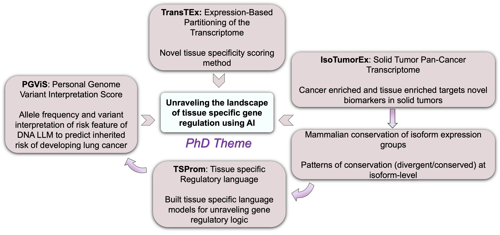
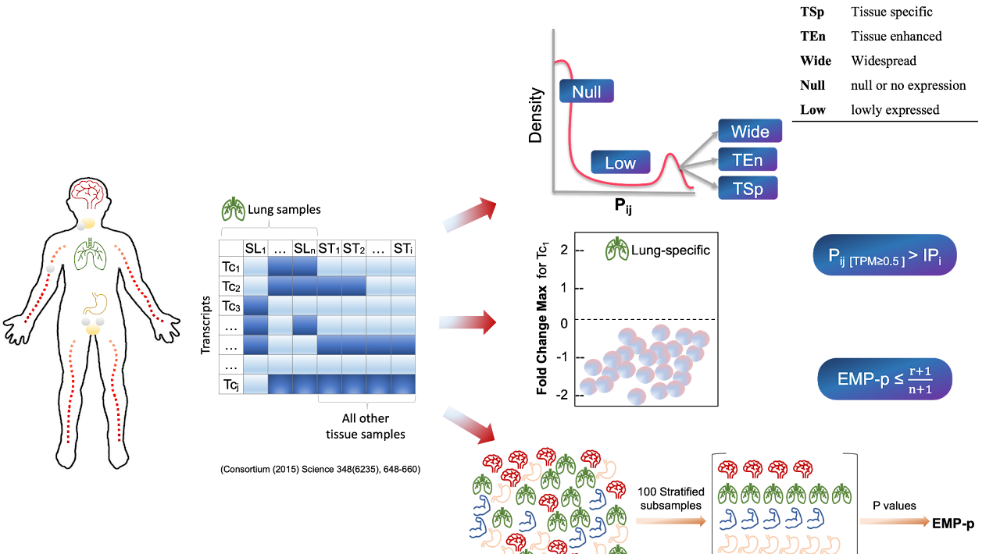
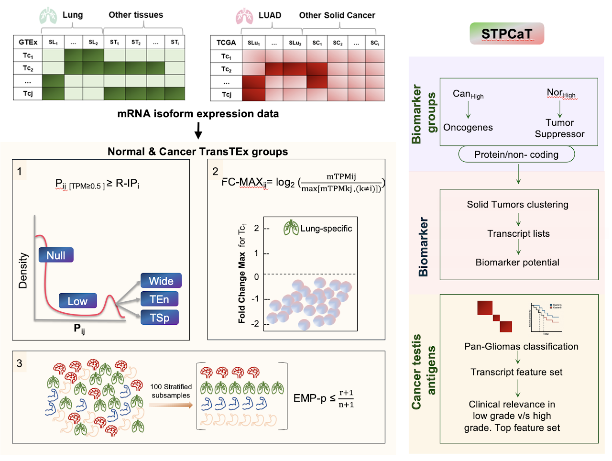
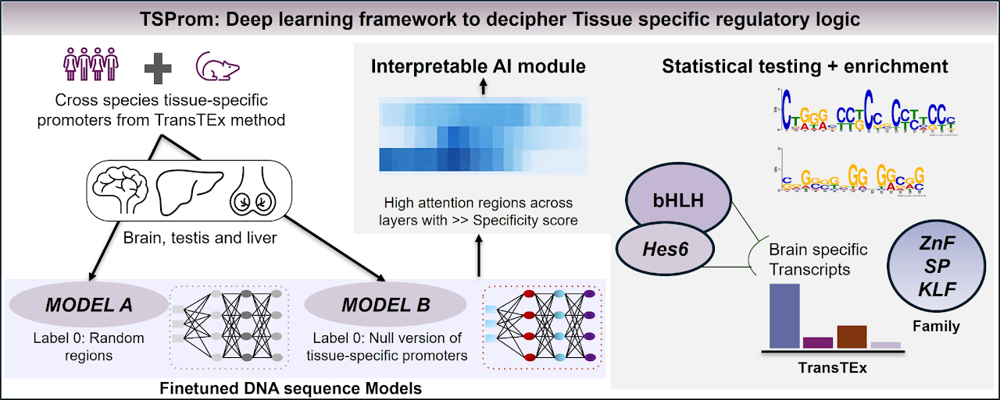
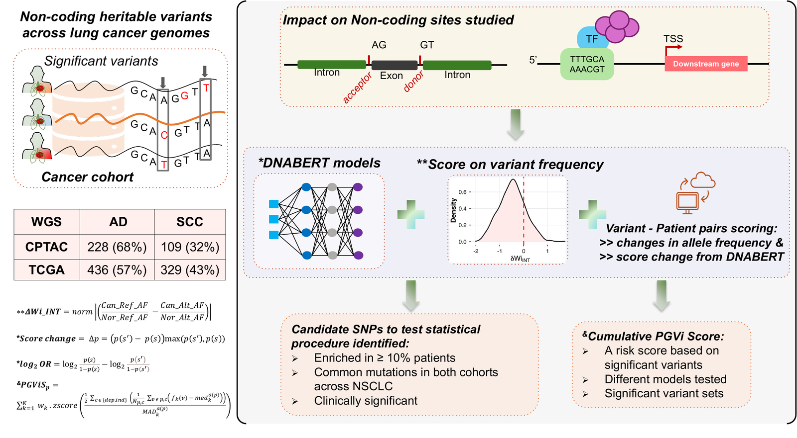

PhD Research
Stony Brook University · Biomedical Informatics
Unraveling tissue-specific gene regulation using AI
From isoform expression and regulatory language to cancer biomarkers and personal genome risk.
Genes show distinct expression patterns across tissues despite sharing many core molecular processes. These differences suggest that tissue-specific gene regulation relies on distinct regulatory modules and combinations of cis-regulatory elements. Alternative splicing and transcriptional regulation also generate multiple isoforms of a gene, making it essential to study expression at the individual isoform level.

TransTEx
Establishing a framework for tissue-specific transcript expression.
To address the lack of a gold-standard method for identifying tissue-specific transcripts, I developed Transcript-level Tissue Expression (TransTEx). It classifies the normal human transcriptome into five expression groups, ranging from minimal to tissue-specific expression: null, lowly expressed, widespread, tissue-enhanced, and tissue-specific.
This framework provides a foundation for examining tissue-specific regulatory features, including promoter usage, and how their disruption in cancer may reveal mechanisms of oncogenesis and context-dependent therapeutic targets.

Isoform Tumor Expression in Solid Tumor
Identifying transcript-level biomarkers and therapeutic targets.
Analysis of high and low transcript expression across pan-cancer transcriptomes identified cancer-testis antigen targets with biomarker potential in pan-gliomas. Studying isoform biomarker groups and protein alterations in extracellular domains highlights additional opportunities for target discovery.
This work extends tissue-specific expression analysis to cancer, connecting altered isoform expression with potential applications in biomarker discovery and cancer signaling regulation.

Evolution of brain-specific isoforms
Do tissue-specific expression patterns extend to close relatives of humans? To explore this question, I analyzed the evolutionary landscape of brain-specific isoforms. Diverged transcripts showed exon loss within otherwise conserved genes, emphasizing the importance of examining conservation at the isoform level.
TSProm
Interpreting the regulatory language of tissue-specific promoters.
To investigate the less-understood non-coding genome in tissue-specific transcription initiation, I developed TSProm, an interpretable framework based on genomic large language models (gLMs).
TSProm uncovered key transcription factor motifs, their families, and interactors, revealing master regulators in the brain and their dysregulation in pan-gliomas. These findings connect promoter sequence features with tissue-specific regulatory circuitry and its disruption in cancer.

PGViS
Translating non-coding variation into individual genomic risk assessment.
Harnessing the clinical potential of gLMs, this work examines how short mutations in cancer whole genomes disrupt splice sites and transcription factor binding sites.
The Personal Genome Variant Interpretation Score combines deep-learning predictions across non-coding sites with smoking status, germline mutations, and carcinogen exposure to provide an individual-level genomic risk assessment.

Overall contribution
This research develops statistical and deep-learning informatics methods to understand tissue-specific gene regulation, its cis-regulatory landscape and interactors, and its roles in cancer and evolution. Clinically, it contributes AI-based frameworks for developing personal genome risk scores in cancer.